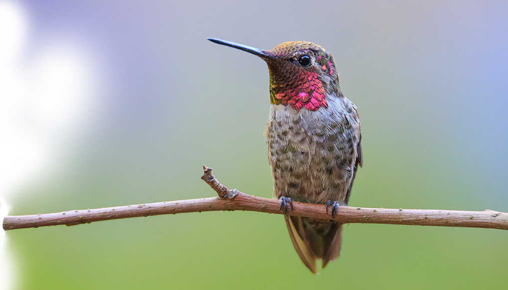
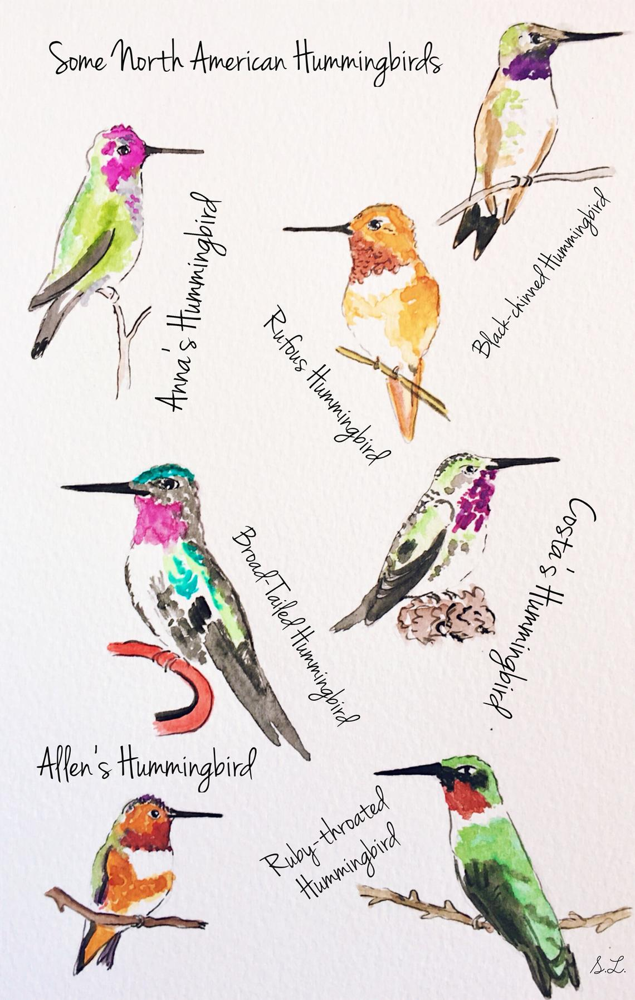
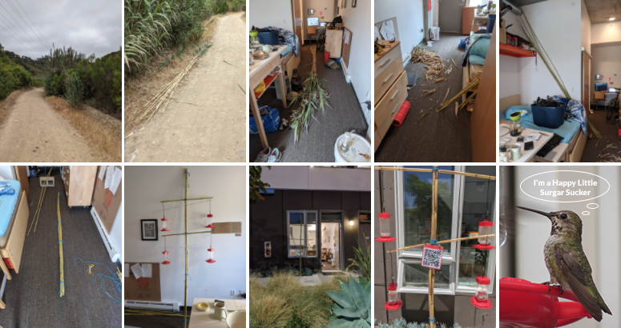

Welcome to the Hummingbird Cafeteria
Welcome to the Hummingbird Cafeteria
There are lots of different kinds of hummingbirds. The most common in San Diego are Anna's hummingbirds. That's what your going to see at these feeders. Check out the chart and see if you can spot other varieties. The females are harder to spot than the males. Their faces are just a bit less bright.
Why is there a humming bird cafeteria outside of Mesa Neueva's Cresta Apartments?
Hummingbirds are just so beautiful and energetic I could not resist.
Seriously just take a look at these delightful little buzzing buggers for thirty
seconds and see if you don't have a smile on your face. I build the cafeteria
because I wanted a show while I cooked dinner, and I thought, hey in for a penny
in for a pound, let's buy six humming bird feeders ten ports round. Humming
birds are amazing pollinators and their population is directly tied to the
success of many plant species. Typically hummingbirds only raise a single
chick, however when food is plenty they are known to raise two or three. There
are hundreds of hummingbirds in the valleys that run just north of Mesa Neueva,
and down by the I-5. Their food gets short when it gets hot, and these years are
hotter than ever.
TLDR: I like looking at hummingbirds and want to support the
local population.
What is this bamboo eyesore shaped like a Patriarchal Cross
It's not a religious effigy, or at least it's not intended to be one. I
needed cheap building supplies so I hunted down some invasivly growing bamboo
down on the secret path to Sorento Valley. I was inspired by an amazing video of Liziqi
building furniture out of bamboo. My skill is far less, but the home made
aesthetic remains the same. The design was a matter of debate, if you think you
have a better one hit me up.
Here is how it was made:
Click the link to view larger images
1. The Walk |
2. Gathering |
3. Bringing it home |
4. Cleaning |
5. More Cleaning |
6. Binding |
7. Building |
8. Placement |
9. QR Code

I came to look at hummingbirds but there is a strange man behind the window weirding me out!
Yes I live in this apartment that's the way it goes. Feel free to watch and take pictures of the birds, I'm glad for people to do it. Heck if you have any questions holler in and I'll probably come out and say hi. My name is Stew btw feel free to drop me a line at the link below.
Community
One of my hopes is to increase the sense of community at Mesa Nueva. I believe that public installations, even those as modest as the humming bird cafeteria can help to build a sense of local identity. My intuition is that people feel a sense of belonging when they participate, so I'd like to encourage that here by showcasing some of the ways individuals have engaged with the cafeteria.
Photography
Some Lovely Photos - Curtesy of a local photographer. Selected Photos (click to expand) All Photos